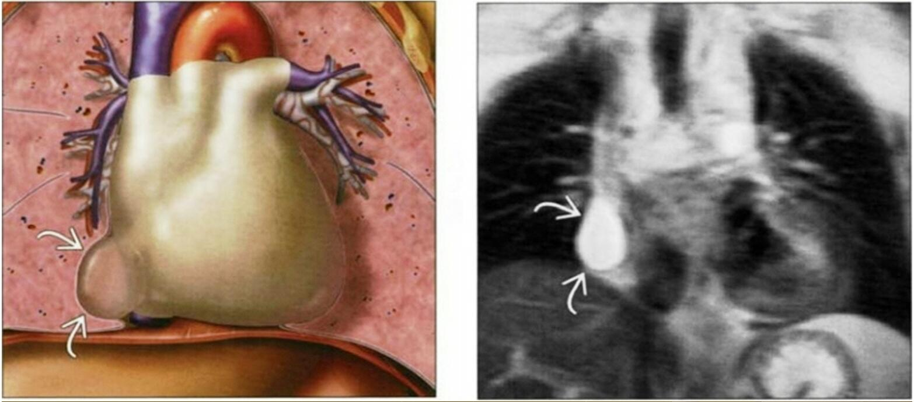
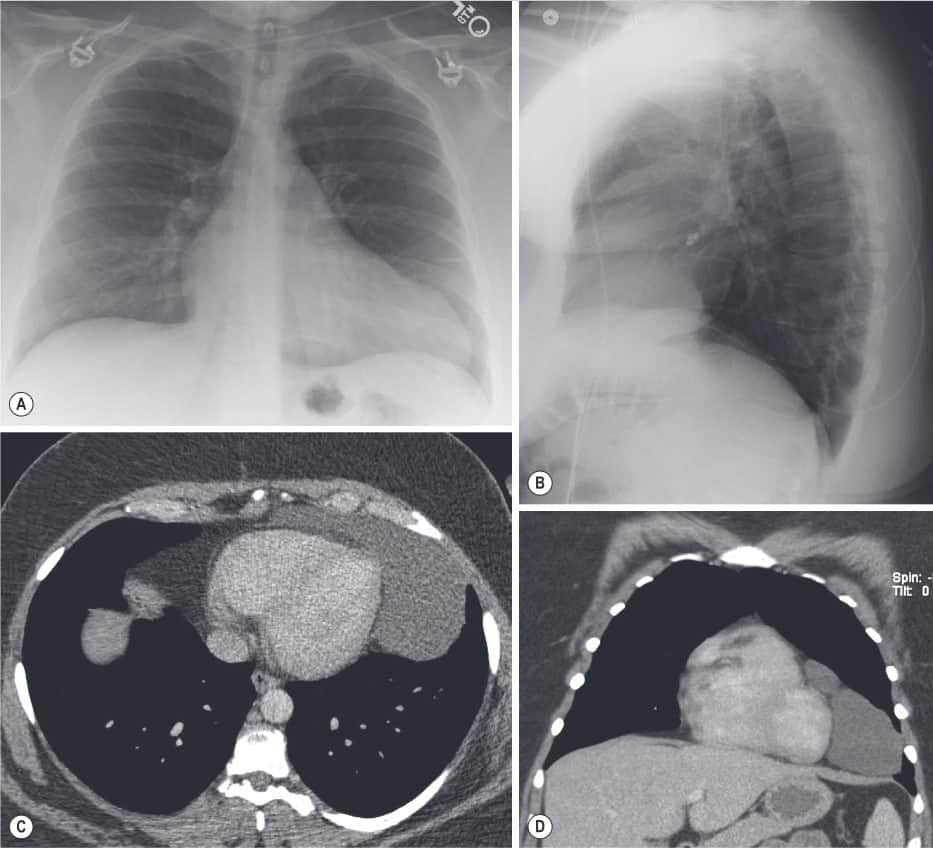
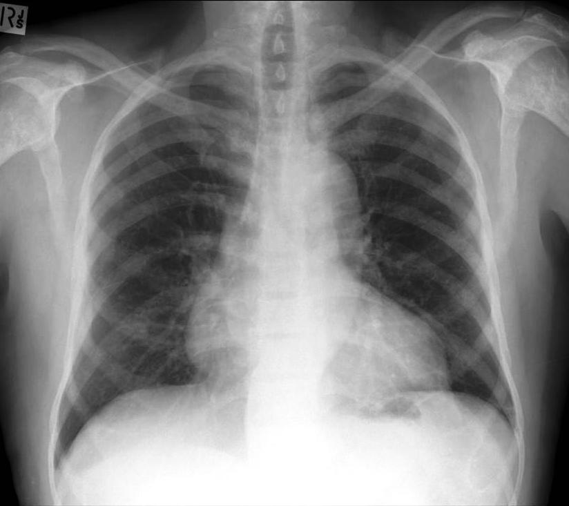
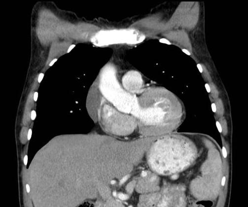
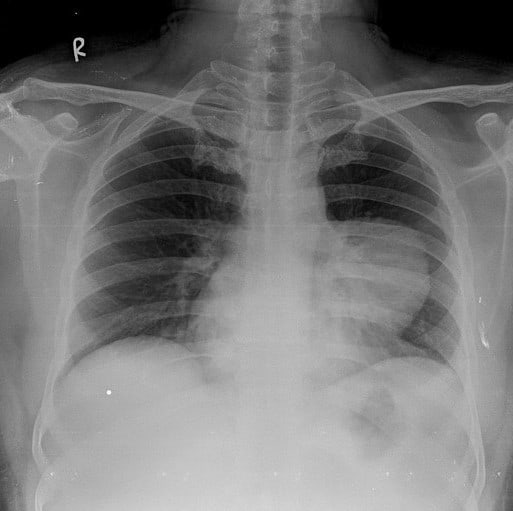
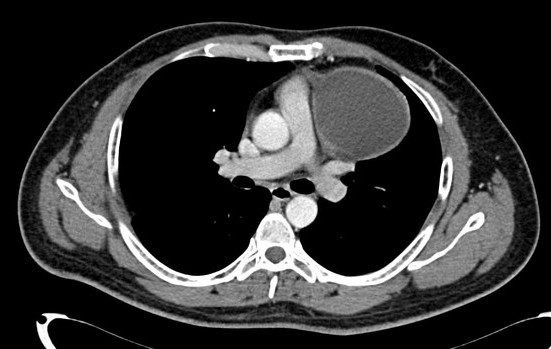
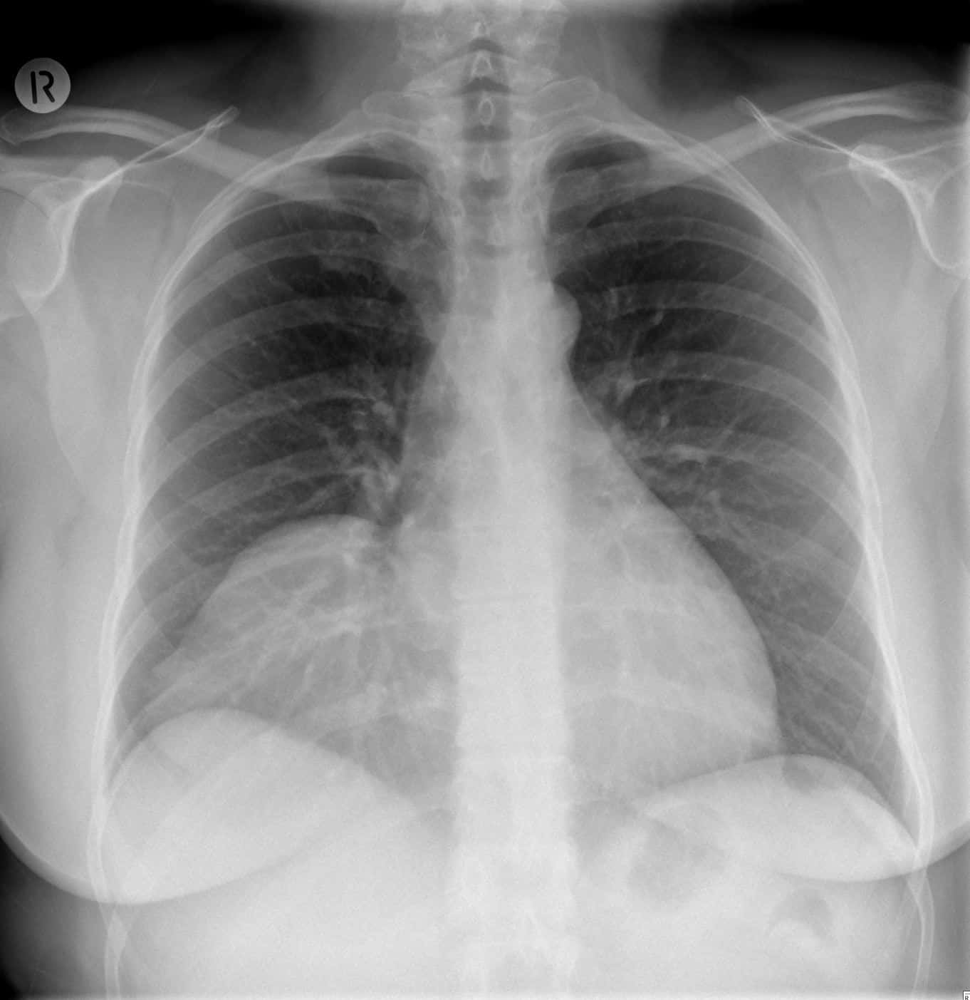
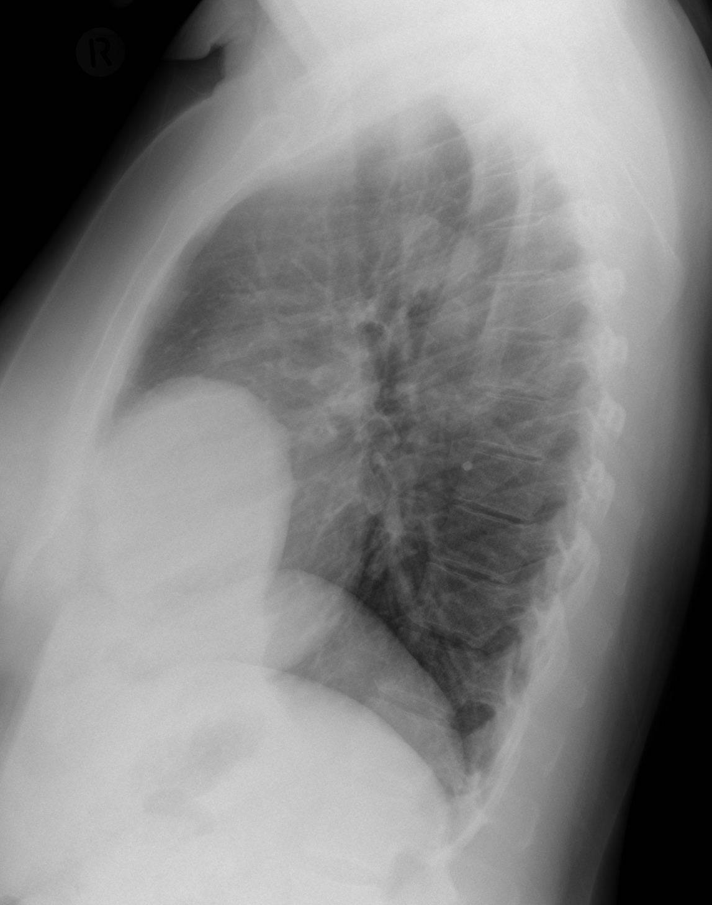
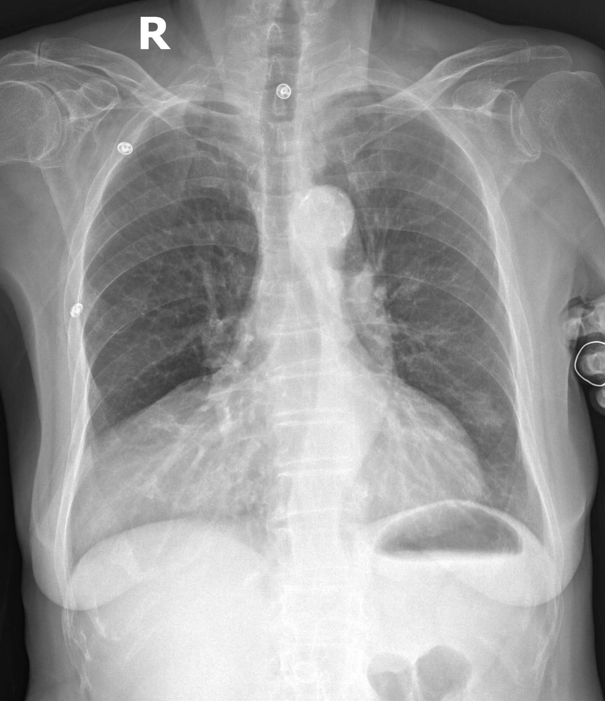
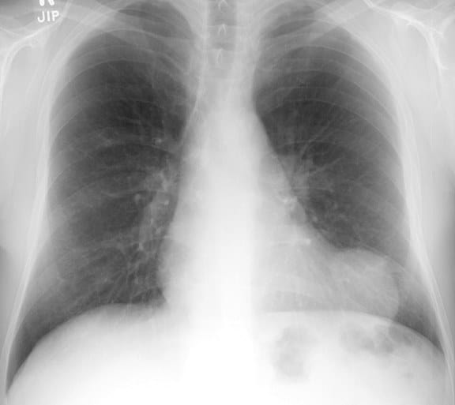

Nang Màng Tim
I. Đại cương
– Định nghĩa:
+ Nang màng tim (pericardial cyst), còn gọi là nang màng phổi–màng tim, là tổn thương nang lành tính, thường bẩm sinh; nang không thông với khoang màng tim, phân biệt với túi thừa màng tim.
+ Đa số hình thành do các ổ trung mô tạo khoang màng tim không hợp nhất hoàn toàn trong quá trình phát triển phôi thai.
+ Ít gặp dạng mắc phải sau viêm màng ngoài tim, chấn thương hoặc phẫu thuật tim-ngực.
– Dịch tễ:
+ Chiếm khoảng 6–7% khối trung thất.
+ Chiếm khoảng 33% nang trung thất.
+ Tỷ lệ mắc ước tính khoảng 1/100.000 người.
– Kích thước: Nang thường có đường kính dưới 5 cm; dải kích thước được ghi nhận khoảng 2–28 cm.
– Vị trí: Nang thường áp sát màng ngoài tim, hay gặp nhất ở góc tâm hoành phải (51–70%), tiếp đến là góc tâm hoành trái (22–38%); khoảng 8–11% nằm ở vị trí khác, như trung thất sau, rốn phổi, cạnh khí quản hoặc gần quai động mạch chủ.
– Hình thái lâm sàng:
+ Khoảng 75–89% không có triệu chứng và thường được phát hiện tình cờ trên X-quang ngực hoặc siêu âm tim.
+ Khi có triệu chứng, thường do chèn ép cấu trúc lân cận, gây đau ngực không điển hình, ho kéo dài, khó thở hoặc khó nuốt.
– Đặc điểm mô bệnh học:
+ Thành nang gồm mô xơ, được lót bởi một lớp tế bào trung biểu mô; bên trong chứa dịch trong.
+ Thành nang có cấu trúc tương tự màng ngoài tim bình thường, đôi khi kèm viêm mạn tính nhẹ.

II. Giải phẫu
1. Phân chia trung thất
– Trung thất là khoang giải phẫu nằm giữa hai lá phổi, được giới hạn phía trước bởi mặt sau xương ức, phía sau bởi mặt trước cột sống và đầu sau xương sườn, hai bên là màng phổi trung thất, giới hạn trên là lỗ cổ ngực của lồng ngực, giới hạn dưới là phần giữa cơ hoành.
* Phân chia theo phẫu thuật (Thomas. W. Shields)
– Trung thất trước: giới hạn phía trước bởi xương ức và phía sau bởi các mạch máu lớn và màng ngoài tim.
– Trung thất giữa: giới hạn giữa trung thất trước và sau.
– Trung thất sau: được giới hạn phía trước bởi thành sau khí phế quản và mặt sau của màng ngoài tim, giới hạn phía sau bởi thân các đốt sống ngực.
– Ngoài tính theo mặt phẳng trên-dưới, trung thất được chia thành 3 tầng trên, giữa, dưới bởi 2 mặt phẳng ngang: mặt tiếp giáp với quai động mạch chủ và mặt đi qua chỗ phân đôi của khí quản.

© Chẩn Đoán Hình Ảnh Xray.vn
* Phân chia theo giải phẫu
– Trung thất trên: thuộc phần trên mặt phẳng đi ngang qua khe gian đốt sống ngực T4-T5 ở phía sau và góc giữa cán – thân xương ức ở phía trước.
– Trung thất trước: khoang nằm dưới mặt phẳng kể trên, giữa phía trước màng ngoài tim và mặt sau xương ức.
– Trung thất giữa: khoang chứa màng ngoài tim và tim.
– Trung thất sau: khoang nằm dưới mặt phẳng kể trên, sau màng ngoài tim và trước thân các đốt sống ngực.


* Phân chia ITMIG (International Thymic Malignancy Interest Group)


– Khoang trước mạch máu:
+ Giới hạn phía trước bởi xương ức và phía sau bởi các mạch máu lớn và màng ngoài tim.
+ Thành phần: tuyến ức, tổ chức mỡ, hạch bạch huyết, tĩnh mạch cánh tay đầu.
+ Bệnh lý thường gặp: bệnh lý tuyến ức, u tế bào mầm, lymphoma, di căn hạch, bướu giáp thòng.
– Khoang tạng:
+ Giới hạn phía trước là khoang trước mạch máu, giới hạn phía sau bởi đường thẳng về phía sau cột sống, cách bờ trước cột sống 1cm.
+ Thành phần: tim, tĩnh mạch chủ trên, động mạch chủ, động mạch phổi, ống ngực, khí phế quản, thực quản, hạch bạch huyết.
+ Bệnh lý thường gặp: bệnh lý tim và mạch máu lớn, bệnh lý khí quản, bệnh lý thực quản, nang đôi (nang màng tim, nang phế quản), bệnh lý hạch.
– Khoang cạnh cột sống:
+ Giới hạn phía trước bởi khoang tạng.
+ Thành phần: cột sống ngực, mô mềm cạnh cột sống.
+ Bệnh lý thường gặp: khối u nguồn gốc thần kinh, nhiễm trùng cột sống, chấn thương cột sống, tạo máu ngoài tủy.


2. Khối u trung thất

III. Chẩn đoán x-quang
– Trên phim ngực, khối trung thất thường không có khí hoặc phế quản đồ khí bên trong vì nằm ngoài nhu mô phổi; nang màng tim đơn thuần chứa dịch và không thông với đường thở. Khí trong nang là bất thường, cần nghĩ đến bội nhiễm, thông thương thứ phát hoặc can thiệp.
– Trên phim thẳng, khối trung thất thường tạo góc tù với nhu mô phổi tại chỗ tiếp xúc, còn khối trong phổi thường tạo góc nhọn với bờ trung thất; dấu này giúp định vị nguồn gốc nhưng không đặc hiệu, nhất là khi khối lớn hoặc áp sát màng phổi.
– Khối trung thất trước lớn có thể làm gián đoạn hoặc đẩy lệch các đường trung thất, trong đó có đường nối trước (anterior junction line); dấu này gợi ý vị trí nhưng không đặc hiệu cho nang màng tim, còn nang nhỏ ở góc tâm hoành có thể không làm biến dạng các đường này.
– Trên phim nghiêng, xóa khoảng sáng sau xương ức gợi ý khối trung thất trước; dấu này không đặc hiệu cho nang màng tim, vốn thường biểu hiện ở góc tâm hoành, và khoảng sáng cũng có thể bị thu hẹp do mỡ trung thất.
– Trên phim thẳng, nang màng tim điển hình hiện là khối mờ tròn hoặc bầu dục, bờ rõ, đồng nhất ở góc tâm hoành, thường bên phải; tiếp xúc với bờ tim hoặc cơ hoành gây dấu hiệu xóa bờ (silhouette sign), nhưng dấu này không xác định được bản chất dịch hay nang.
– Khối áp sát bờ tim phải có thể làm xóa bờ tim; nếu bờ khối liên tục với động mạch chủ, cần nghĩ đến tổn thương mạch như phình động mạch chủ, nhưng phim ngực đơn độc thường không xác định chắc mối liên tục này và cần CLVT để phân biệt.
– Trên phim thẳng, khi mạch rốn phổi còn nhìn thấy xuyên qua khối mờ chồng lên vùng rốn phổi, dấu hiệu che phủ rốn phổi (hilum overlay sign) cho biết khối không xuất phát từ rốn phổi; dấu này không xác định chắc vị trí trước hay sau và không đặc hiệu cho nang màng tim.
– Thoát vị Morgagni có thể giả khối mờ ở góc tâm hoành; khí ruột trong khối gợi ý thoát vị, nhưng không có khí không loại trừ vì túi thoát vị có thể chỉ chứa mỡ hoặc gan; CLVT xác định khi thấy thành phần thoát vị liên tục qua khe hoành.
– Đệm mỡ màng tim có thể tạo đám mờ góc tâm hoành nhưng thường không tạo khối lồi khu trú, bờ rõ như nang; X-quang không phân biệt chắc, còn CLVT cho thấy tỷ trọng mỡ.
– X-quang ngực không xác định chắc bản chất nang hay mức độ ngấm thuốc; khi nghi nang màng tim, cần CLVT để đánh giá tỷ trọng dịch và mối liên quan với màng tim, đối chiếu mục IV.









=> Case lâm sàng 1
=> Case lâm sàng 2:
=> Case lâm sàng 3:
=> Case lâm sàng 4:
=> Case lâm sàng 5:
=> Case lâm sàng 6:
=> Case lâm sàng 7:
=> Case lâm sàng 8:
=> Case lâm sàng 9:
=> Case lâm sàng 10:
=> Case lâm sàng 11:
=> Case lâm sàng 12:
– Vôi hóa thành nang màng tim rất hiếm; cơ chế chưa rõ, một số báo cáo cho rằng có thể liên quan đến viêm mạn, nhưng chưa đủ cơ sở để quy kết do xuất huyết cũ.
+ Các ca hiếm được mô tả có vôi hóa ngoại vi dạng viền; chưa có bằng chứng xác lập đây là biểu hiện thường gặp của nang lâu năm.
+ Nang phế quản và nang tuyến ức cũng có thể vôi hóa nên dấu hiệu này không đặc hiệu. Phân biệt dựa vào vị trí và mối liên quan giải phẫu: nang màng tim thường ở góc tâm hoành, hay bên phải; nang tuyến ức thường ở trung thất trước; nang phế quản thường ở trung thất giữa, quanh carina. Nang màng tim cũng có thể nằm ở vị trí khác dọc theo màng tim.
+ Vôi hóa thành mỏng có thể khó nhận thấy trên X-quang; CLVT giúp xác định vị trí vôi hóa và đánh giá thành phần dịch, đồng thời tìm phần đặc hoặc nốt thành ngấm thuốc. Không dùng riêng dấu hiệu vôi hóa để loại trừ tổn thương u.
IV. Chẩn đoán CLVT
– Kích thước:
+ Nang thường nhỏ; một số tài liệu mô tả đường kính khoảng 1–5 cm, nhiều nang dưới 3 cm. Tổng quan mới hơn nêu nang đơn thuần thường dưới 5 cm; dải 2–28 cm đã được ghi nhận. Đây là các mô tả từ những nguồn khác nhau, không phải ngưỡng phân loại thống nhất.
+ Một số tài liệu gọi nang trên 10 cm là “nang khổng lồ” và xem đây là dạng hiếm; tuy nhiên, ngưỡng dùng cho thuật ngữ này chưa thống nhất.
+ Nang lớn có thể chèn ép cấu trúc lân cận, gây đau ngực không điển hình, khó thở hoặc ho kéo dài; nhiều nang nhỏ không triệu chứng được phát hiện tình cờ. Triệu chứng còn phụ thuộc vị trí và mức độ chèn ép, không chỉ vào đường kính.
+ Nang lớn có thể mô phỏng khối u đặc trung thất; cần đánh giá thành phần nang, phần đặc và mối liên quan với màng tim.
+ Tràn dịch màng phổi khu trú cũng có thể tạo hình ảnh khối lớn tương tự; cần xác định tổn thương thuộc khoang màng phổi hay nằm cạnh màng tim.
– Vị trí:
+ Nang màng tim thường nằm cạnh hoặc áp sát màng ngoài tim; không nên xem việc bám trực tiếp vào màng tim là điều kiện bắt buộc.
+ Vị trí thường gặp nhất là góc tâm hoành phải, với tỷ lệ được báo cáo khoảng 51–70%; góc tâm hoành trái khoảng 22–38%. Khoảng 8–11% nằm ở vị trí không điển hình như trung thất trước-trên, trung thất sau, vùng rốn phổi hoặc cạnh khí quản.
+ Nang phế quản thường xuất phát từ trung thất tạng và liên quan với khí quản hoặc phế quản; khi nang nằm ngoài góc tâm hoành, cần xét khoang trung thất và mối liên quan với đường khí-phế quản để phân biệt.
+ Nang tuyến ức thường nằm ở trung thất trước; đối chiếu vị trí với tuyến ức và màng ngoài tim giúp phân biệt với nang màng tim. Không dựa riêng vào nhận định “bám màng tim”.
– Đặc điểm hình ảnh:
+ Nang đơn thuần thường có đậm độ dịch đồng nhất, gần nước; dải 0–40 HU được báo cáo trên CLVT. Dịch giàu protein hoặc máu có thể làm tăng đậm độ, chồng lấp với mô mềm và gây nhầm với khối đặc; không dùng HU đơn độc để kết luận.
+ Nang điển hình thường đơn khoang, bờ rõ, thành mỏng đều, không có vách hoặc nốt thành; hạch trung thất kèm theo không phải đặc điểm thường gặp. Vôi hóa thành mảnh có thể khó nhận thấy nếu chỉ xem cửa sổ mô mềm.
+ Khối thường hình tròn hoặc bầu dục, nằm gần màng tim, hay gặp ở góc tâm hoành. Thay đổi hình dạng hoặc kích thước theo tư thế gợi ý túi thừa màng tim hơn nang đơn thuần; tuy nhiên, đường thông có thể không thấy trên CLVT.
+ Thành phần dịch và thành nang đơn thuần thường không ngấm thuốc. Thành dày, không đều hoặc ngấm thuốc có thể gặp khi viêm, nhiễm trùng hoặc có tổn thương dạng nang phức tạp.
+ U tuyến ức nang hóa có thể có nốt mô mềm hoặc vách ngấm thuốc; đánh giá phần đặc ngấm thuốc giúp phân biệt với nang màng tim đơn thuần.
+ Nang giả tụy có thể có thành ngấm thuốc; tái tạo đa mặt phẳng giúp tìm sự liên tục với tụy qua khe hoành, hỗ trợ phân biệt với nang cạnh màng tim.
+ Khi dịch giàu protein hoặc có máu làm CLVT chưa xác định được bản chất, cộng hưởng từ giúp phân biệt dịch phức tạp với mô đặc ngấm thuốc.
+ Tái tạo đa mặt phẳng xác định vị trí và mối liên quan với màng tim, tim, mạch máu và cơ hoành, hỗ trợ lập kế hoạch phẫu thuật nhưng không tự quyết định khả năng phẫu thuật.
=> Case lâm sàng 1:


=> Case lâm sàng 2:


=> Case lâm sàng 3:
=> Case lâm sàng 4:
=> Case lâm sàng 5:
V. Phân biệt
* Nang đôi thực quản
– Định nghĩa:
+ Là dị tật bẩm sinh thuộc nhóm nang đôi ống tiêu hóa, liên quan đến bất thường phát triển ruột trước trong tuần 4–8 của phôi thai; cơ chế chính xác chưa được xác định hoàn toàn.
+ Nang thường nằm trong hoặc sát thành thực quản, có mối liên quan mật thiết với lớp cơ thực quản. Khoảng 80–90% không thông với lòng thực quản; dạng ống có thể thông trực tiếp.
– Đặc điểm mô bệnh học:
+ Lòng nang có thể được lót bởi biểu mô đường tiêu hóa hoặc biểu mô hô hấp; đôi khi có niêm mạc lạc chỗ.
+ Thành nang có hai lớp cơ trơn và không có sụn. Đây là đặc điểm mô bệnh học hỗ trợ phân biệt với nang phế quản, không phải dấu hiệu có thể khẳng định chỉ trên CT.
– Dịch tễ:
+ Nang có thể không triệu chứng và được phát hiện tình cờ ở người lớn; khi biểu hiện triệu chứng trong thời thơ ấu, thường xuất hiện trong 2 năm đầu đời.
+ Dị tật đốt sống không phải đặc điểm điển hình của nang đôi thực quản. Nếu có bất thường cột sống, cần cân nhắc nang thần kinh ruột hoặc các dị tật phát triển liên quan.
+ Nang thường đơn độc; nang đôi thực quản nhiều ổ hiếm gặp.
– Vị trí:
+ Thường ở trung thất sau, sát hoặc trong thành thực quản; có thể lệch phải và thường gặp ở đoạn thấp.
+ Khoảng 60–80% nằm ở 1/3 dưới thực quản; các nang còn lại gặp ở 1/3 giữa hoặc 1/3 trên.
– Kích thước: Nang thường có kích thước vài cm, nhưng có thể lớn; nang lớn có thể gây hiệu ứng khối, chèn ép thực quản hoặc đường thở, dẫn đến nuốt nghẹn hoặc triệu chứng hô hấp.
– Đặc điểm hình ảnh:
+ Trên CT, nang thường bờ rõ, nằm trong hoặc sát thực quản. Dịch đơn thuần thường có đậm độ thấp; dịch giàu protein hoặc xuất huyết có thể làm tăng đậm độ. Thành phần dịch không ngấm thuốc sau tiêm.
+ Nang phế quản là chẩn đoán phân biệt; hình ảnh CT/MRI có thể chồng lấp. Mối liên quan với thực quản và cấu trúc thành nhiều lớp trên siêu âm nội soi có thể giúp định hướng; mô bệnh học xác định các đặc điểm phân biệt.
+ Nang màng tim thường ở góc tâm hoành, cạnh tim; nang đôi thực quản thường liên quan với thực quản ở trung thất sau. Phân biệt chủ yếu dựa vào vị trí và mối liên quan giải phẫu; không dùng “không đổi hình theo hô hấp” làm tiêu chí phân biệt.
=> Case lâm sàng 1:


=> Case lâm sàng 2:


=> Case lâm sàng 3:


* Nang phế quản
– Định nghĩa: Là dị tật bẩm sinh của cây khí–phế quản do chồi khí–phế quản phát triển bất thường; nang thường hình thành khoảng ngày 26–40 của thời kỳ phôi thai (xấp xỉ tuần 4–6), tạo thành túi mù chứa dịch tiết.
– Đặc điểm mô bệnh học:
+ Thành nang thường được lót bởi biểu mô trụ giả tầng có lông chuyển; có thể có tế bào hình đài và tuyến thanh nhầy.
+ Thành nang có thể chứa sụn hyalin và cơ trơn với mức độ thay đổi; không phải nang nào cũng có đầy đủ các thành phần này.
+ Nang đôi thực quản thường có hai lớp cơ trơn và không có sụn; đây là điểm phân biệt mô bệnh học, không phải dấu hiệu xác định được chỉ trên CT.
– Dịch tễ: Nang có thể được phát hiện từ trẻ sơ sinh đến người trưởng thành; nhiều trường hợp không triệu chứng và được phát hiện tình cờ. Các loạt bệnh không cho thấy ưu thế giới nhất quán.
– Vị trí:
+ Nang trung thất thường ở trung thất giữa, cạnh khí quản hoặc phế quản gốc, dưới chỗ chia đôi khí quản và quanh rốn phổi; có thể nằm cạnh thực quản, và vị trí bên phải thường gặp nhưng không bắt buộc.
+ Nang trong nhu mô phổi được ước tính chiếm khoảng 20–30% tổng số nang phế quản; có thể gặp ở thùy dưới.
– Kích thước: Nang có kích thước thay đổi, thường vài cm; nang lớn có thể gây hiệu ứng khối và chèn ép đường thở lân cận.
– Đặc điểm hình ảnh:
+ Nang thường đơn độc, hình tròn hoặc bầu dục, bờ rõ và thành mỏng; đôi khi có hình múi hoặc bờ không đều, nhất là khi có biến chứng.
+ Nang thường là túi kín, không thông với cây phế quản. Khí hoặc mức khí–dịch có thể gợi ý nhiễm trùng hoặc rò/thông với đường thở; cần đối chiếu bệnh cảnh và tiền sử can thiệp.
+ Tỷ trọng thay đổi theo thành phần dịch: dịch loãng có thể có tỷ trọng gần nước (khoảng −20 đến 20 HU), trong khi dịch giàu protein, chất nhầy hoặc máu có thể có tỷ trọng trên 20 HU, đôi khi trên 30 HU. Tỷ trọng cao đơn độc không đủ kết luận tổn thương là mô đặc; MRI có thể hỗ trợ xác định bản chất dịch.
+ Vôi hóa thành nang có thể gặp nhưng không đặc hiệu; không nên quy kết cho viêm mạn hoặc xuất huyết cũ nếu thiếu căn cứ. U quái được gợi ý hơn khi phối hợp vôi hóa với mỡ và các thành phần mô khác.
+ Thành phần dịch thường không ngấm thuốc; thành nang có thể ngấm nhẹ, nhất là khi viêm hoặc nhiễm trùng. Nốt đặc hay vách ngấm thuốc cần đánh giá thêm, vì có thể gặp trong u tuyến ức thoái hóa nang.
+ Nang đôi thực quản thường liên quan sát với thực quản, còn nang phế quản thường liên quan với cây khí–phế quản; hình ảnh CT/MRI có thể chồng lấp nên cần dựa vào vị trí và mối liên quan giải phẫu.
+ Nang màng tim thường nằm ở góc tâm hoành, cạnh màng tim; nang phế quản thường ở trung thất giữa, gần đường thở trung tâm. Phân biệt chủ yếu dựa vào vị trí và mối liên quan với cấu trúc lân cận; không dùng việc “không đổi hình theo hô hấp” làm tiêu chí.
=> Case lâm sàng 1:


=> Case lâm sàng 2:


=> Case lâm sàng 3:


* Đệm mỡ màng tim
– Đệm mỡ màng tim (pericardial fat pad) là đám mô mỡ sinh lý thường thấy ở góc tâm hoành; cần phân biệt mỡ thượng tâm mạc, nằm giữa cơ tim và lá tạng màng ngoài tim, với mỡ cạnh tim, nằm ngoài lá thành màng ngoài tim.
– Vị trí: Thường gặp ở góc tâm hoành phải, nhưng cũng có thể gặp bên trái; đệm mỡ có thể áp sát và tạo đường viền quanh màng ngoài tim.
– Đặc điểm hình ảnh:
+ Trên X-quang, đệm mỡ lớn có thể tạo bóng giống khối ở góc tâm hoành; trên CLVT, nhận biết nhờ đậm độ mỡ và sự liên tục với mô mỡ lân cận.
+ Đệm mỡ không có vỏ bao riêng, bờ có thể không sắc nét và thường không gây hiệu ứng khối đẩy ép rõ.
+ Nang màng tim thường là tổn thương khu trú, bờ rõ, đồng nhất đậm độ dịch; phân biệt với mô mỡ dựa chủ yếu vào đậm độ và hình thái toàn tổn thương, không chỉ vào sự hiện diện của thành bao.
+ Cạm bẫy hoại tử mỡ ngoài màng tim: thường biểu hiện đau ngực kiểu màng phổi cấp; CLVT thấy ổ mỡ khu trú vùng cạnh màng tim, kèm thâm nhiễm mỡ, viền mô mềm tăng đậm độ, đôi khi có chấm đậm độ trung tâm và có thể kèm dày hoặc tràn dịch màng phổi; có thể nhầm với khối viêm hoặc u nếu không đối chiếu bối cảnh lâm sàng.
=> Case lâm sàng 1:
=> Case lâm sàng 2:
* Nang giả tụy trung thất
– Nang giả tụy trung thất (mediastinal pancreatic pseudocyst) là biến chứng hiếm của viêm tụy cấp hoặc mạn do dịch tụy rò sau tổn thương ống tụy, lan qua khe hoành thực quản hoặc khe hoành động mạch chủ lên trung thất sau; sau viêm tụy cấp, ổ dịch được gọi là nang giả tụy khi đã có thành viêm trưởng thành, thường sau 4 tuần.
– Đặc điểm mô bệnh học: Nang giả tụy không có lớp biểu mô lót; thành gồm mô xơ và mô hạt, chứa dịch tụy giàu amylase, thường không có thành phần hoại tử đáng kể.
– Đặc điểm hình ảnh:
+ Tổn thương dạng nang dịch thường ở trung thất sau, có thể liên tục với ổ dịch quanh tụy qua khe hoành; CLVT ngực-bụng với tái tạo đa mặt phẳng giúp nhận diện đường lan. Nang màng tim thường ở góc tâm hoành trước, không liên tục với tụy.
+ MRI/MRCP giúp đánh giá liên quan của ổ dịch với ống tụy và phát hiện thông thương khi CLVT chưa xác định rõ, qua đó củng cố nguồn gốc tụy.
+ Sau tiêm, thành nang xơ có thể ngấm thuốc dạng viền, trong khi dịch trung tâm không ngấm; nang màng tim đơn thuần thường không ngấm thuốc.
– Phân biệt: Nang màng tim (pericardial cyst) thường nằm ở góc tâm hoành trước và không liên tục với tụy; tiền sử viêm tụy, đường lan từ quanh tụy qua khe hoành và dịch nang giàu amylase gợi ý nang giả tụy trung thất.


* Nang tuyến ức
– Nang tuyến ức (thymic cyst) là tổn thương nang xuất phát từ tuyến ức, đa số lành tính; thể bẩm sinh thường do tồn dư ống ức–hầu, còn thể nhiều thùy mắc phải có thể liên quan viêm, phẫu thuật lồng ngực, xạ trị hoặc hóa trị và gặp trong bối cảnh u lympho Hodgkin.
– Dịch tễ: Nang tuyến ức hiếm; một số nghiên cứu ước tính chiếm khoảng 1%–4% khối trung thất, nhưng tần suất thực sự và tỷ lệ riêng trong các khối trung thất trước chưa được xác định thống nhất.
– Vị trí: Chủ yếu ở trung thất trước-trên; ít gặp ở vùng cổ và rất hiếm ở trung thất giữa hoặc sau do mô tuyến ức lạc chỗ dọc đường di chuyển phôi.
– Kích thước: Thay đổi; nang lớn có thể chèn ép cấu trúc lân cận, nhưng kích thước đơn thuần không dự đoán chắc chắn triệu chứng.
– Hình thái lâm sàng:
+ Khoảng 60% không có triệu chứng, thường được phát hiện tình cờ.
+ Khi có triệu chứng, thường đau ngực, khó thở hoặc ho không đặc hiệu; biểu hiện phụ thuộc vị trí và mức độ chèn ép.
– Đặc điểm hình ảnh:
+ Nang bẩm sinh đơn giản thường đơn thùy, bờ rõ, thành mỏng, chứa dịch đồng nhất và không có phần đặc ngấm thuốc; nang nhiều thùy mắc phải có thể có vách hoặc thành dày do viêm.
+ Dịch giàu protein hoặc xuất huyết có thể làm tăng tỷ trọng trên CLVT và thay đổi tín hiệu trên MRI; tăng tỷ trọng đơn thuần không đồng nghĩa với thành phần đặc.
+ Vôi hóa thành có thể gặp trong nang phức tạp hoặc nhiều thùy; cơ chế chưa rõ, có thể liên quan viêm mạn nhưng không đặc hiệu, vì nang phế quản cũng có thể vôi hóa.
+ Nốt đặc ngấm thuốc, thành hoặc vách dày không đều, hay thành phần mô đặc làm tăng nghi ngờ u tuyến ức dạng nang; MRI hữu ích khi cần phân biệt dịch phức tạp với thành phần đặc.
+ Nang màng tim thường ở góc tâm hoành, còn nang tuyến ức chủ yếu ở trung thất trước-trên; vị trí và đặc điểm dịch là những điểm phân biệt quan trọng.


=> Case lâm sàng 1:


* Thoát vị Morgagni
– Thoát vị Morgagni (Morgagni hernia) là thoát vị qua tam giác ức-sườn ở phần trước cơ hoành. Thoát vị bên trái đôi khi được gọi là thoát vị Larrey, nhưng cách dùng thuật ngữ không thống nhất; nhiều tài liệu dùng tên thoát vị Morgagni cho cả hai bên. Thoát vị vào khoang màng tim là dạng thoát vị hoành trong màng tim riêng, không phải biến thể thông thường của thoát vị Morgagni.
– Dịch tễ: Hiếm; các tổng quan ước tính khoảng 2%–3% số thoát vị hoành bẩm sinh, nhưng tỷ lệ thay đổi tùy mẫu số và quần thể nghiên cứu.
– Cơ chế bệnh sinh: Khiếm khuyết bẩm sinh vùng tam giác ức-sườn, được cho là liên quan sự hợp nhất không hoàn chỉnh của màng phổi-phúc mạc trước với xương ức và các sụn sườn.
– Vị trí: Thường ở bên phải; thoát vị bên trái ít gặp, tổn thương hai bên rất hiếm.
– Hình thái lâm sàng:
+ Nhiều trường hợp không có triệu chứng và được phát hiện tình cờ; tỷ lệ cụ thể thay đổi giữa các nhóm bệnh nhân.
+ Khuyết bẩm sinh có thể chỉ được nhận ra muộn. Ở trẻ sơ sinh, thoát vị có thể gây suy hô hấp; ở người lớn, triệu chứng thường không đặc hiệu như đau ngực sau xương ức, khó thở, đầy bụng hoặc khó tiêu.
+ Chèn ép phổi lân cận có thể liên quan ho hoặc nhiễm trùng hô hấp tái diễn.
– Thành phần túi thoát vị: Thường chứa mạc nối lớn và đại tràng ngang; đôi khi có ruột non, dạ dày hoặc gan.
– Đặc điểm hình ảnh:
+ Trên X-quang, thường thấy đám mờ cạnh tim ở góc tâm-hoành, hay bên phải. Nếu túi chỉ chứa mỡ mạc nối, đám mờ có thể giống khối mô mềm; hình ảnh cũng có thể không đồng nhất tùy thành phần thoát vị.
+ CLVT đa mặt phẳng giúp xác định khuyết cơ hoành trước và thành phần thoát vị liên tục với ổ bụng. Nếu có quai ruột, có thể thấy khí hoặc mức hơi-dịch; mỡ và mạch mạc treo hướng qua khuyết hoành.
– Phân biệt: Nang màng tim (pericardial cyst) thường là khối dịch bờ rõ, đồng nhất, không ngấm thuốc, thường ở góc tâm-hoành. Ngược lại, thoát vị Morgagni có khuyết cơ hoành trước với mỡ hoặc tạng ổ bụng thoát lên; CLVT đa mặt phẳng giúp xác định sự liên tục này. Không thấy khí trong khối không loại trừ thoát vị nếu túi chỉ chứa mỡ.


+ Khi thành phần thoát vị chỉ là gan, đám mờ trên X-quang có thể khá đồng nhất và giống đệm mỡ màng tim. Trên CLVT, gan có đậm độ mô mềm, đệm mỡ có đậm độ mỡ, còn nang màng tim điển hình có đậm độ dịch; CLVT đa mặt phẳng giúp xác nhận sự liên tục giữa nhu mô gan và phần thoát vị qua khuyết cơ hoành.


* Nang thần kinh ruột
– Nang thần kinh ruột (neurenteric cyst) là nang bẩm sinh hiếm, hình thành do sự phân tách bất thường giữa mảng dây sống và nội bì trong tuần thứ 3 của phôi. Nang có thể nối với màng tủy qua khuyết đường giữa thân đốt sống và đi kèm dị dạng đốt sống.
– Vị trí:
+ Nang ngoài ống sống thường ở trung thất sau cạnh cột sống, nhất là vùng ngực hoặc cổ thấp; có thể liên tục với thành phần trong ống sống.
+ Trong các nang thần kinh ruột ở trục sống, khoảng 90% nằm dưới màng cứng, ngoài tủy.
– Đặc điểm hình ảnh:
+ Nang trung thất thường đơn độc, bờ rõ, hình tròn hoặc bầu dục; nang trong ống sống có thể có dạng thùy.
+ Dịch nang có hàm lượng protein và nhầy thay đổi, nên tỷ trọng trên CLVT và tín hiệu trên cộng hưởng từ không cố định. Tín hiệu T1 có thể đẳng hoặc tăng so với dịch não tủy, còn T2 thường tăng tín hiệu; màu trắng sữa, kem hoặc vàng là mô tả đại thể, không suy ra trực tiếp từ hình ảnh.
+ Có thể kèm bất thường đốt sống như bán thân đốt sống, đốt sống bướm hoặc nứt đốt sống. CLVT đánh giá tốt cấu trúc xương; cộng hưởng từ giúp xác định lan vào ống sống và quan hệ với tủy sống, màng tủy.
– Phân biệt: Nang màng tim (pericardial cyst) thường nằm ở góc tâm-hoành, sát màng tim; nang thần kinh ruột thường ở trung thất sau cạnh cột sống và có thể kèm bất thường đốt sống. Vị trí, khuyết đốt sống và đường lan vào ống sống là các điểm phân biệt hữu ích.

VI. Tiên lượng & Điều trị
– Tiên lượng:
+ Nang màng tim thường lành tính và có tiên lượng thuận lợi; diễn tiến tự nhiên chưa được mô tả đầy đủ, dù đã có báo cáo nang tự thoái triển nhưng hiện tượng này hiếm gặp.
+ Triệu chứng và biến chứng thường liên quan đến hiệu ứng khối; chèn ép các buồng tim, mạch máu lớn hoặc đường thở, viêm, xuất huyết và vỡ nang đã được mô tả nhưng hiếm gặp.
– Điều trị:
+ Với nang không triệu chứng, hình ảnh điển hình và không gây chèn ép, có thể theo dõi lâm sàng và siêu âm tim định kỳ; cá thể hóa lịch theo dõi vì chưa có khoảng thời gian thống nhất, bổ sung cắt lớp vi tính hoặc cộng hưởng từ khi siêu âm đánh giá không đầy đủ hoặc nghi nang thay đổi.
+ Với nang có triệu chứng, đặc biệt khi gây chèn ép, ESC (2015) nêu chọc hút qua da, có thể phối hợp gây xơ hóa bằng ethanol; dữ liệu về hiệu quả dài hạn của gây xơ hóa còn hạn chế và nang có thể tái phát sau chọc hút.
+ Cân nhắc phẫu thuật cắt nang, thường bằng phẫu thuật nội soi lồng ngực hỗ trợ video (VATS), khi nang lớn, tăng kích thước, gây triệu chứng hoặc chèn ép, tái phát sau chọc hút hay hình ảnh không điển hình; trước mổ dùng cắt lớp vi tính hoặc cộng hưởng từ để xác định liên quan giải phẫu, siêu âm tim để đánh giá ảnh hưởng huyết động, và sau can thiệp dùng phương tiện hình ảnh phù hợp để kiểm tra tồn lưu, tái phát hoặc biến chứng.
Tài liệu tham khảo
* A Diagnostic Approach to Mediastinal Abnormalities – Camilla R. Whitten, MRCS, FRCR, Sameer Khan
* Imaging of Cystic Masses of the Mediastinum – Mi-Young Jeung, MD, Bernard Gasser, MD, Afshin Gangi, MD
* Pericardial Cyst: A Review of Historical Perspective and Current Concept of Diagnosis and Management – Sandeep Kumar Kar, Tanmoy Ganguly1, Swarnali Dasgupta, Manasij Mitra, Riju Bhattacharya
* Common Symptoms with Rare Entity: A Giant Pericardial Cyst – Sandipkumar Patel, MD, Prabhu Hajmedi, MD, Jeffrey Fischbein, MD
* Multimodalities Imaging in Diagnosis of Pericardial Cyst – Mariacristina Meschisi, Maurizio Cusmà Piccione, Gianluca Di Bella and Concetta Zito
* A diagnostic approach to the mediastinal masses – Sergi Juanpere, Noemí Cañete, Pedro Ortuño, Sandra Martínez, Gloria Sanchez & Lluis Bernado
* Current concepts of diagnosis and management of pericardial cysts – Sandeep Kumar Kar and Tanmoy Ganguly
* Pericardial Disease: Value of CT and MR Imaging – Jan Bogaert
* Symptomatic pericardial cyst: a case series – Mohammad Q. Najib, Hari P. Chaliki
* Pericardial Cyst: Never Too Late to Diagnose – Katrina Lennon Collins
* Grainger & Allison’s Diagnostic Radiology – Andreas Adam